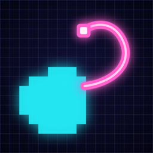

A neon arena game about drawing loops. Leave your land, trace a glowing trail and come home to claim everything inside it. Cut rivals' trails, tame creatures and take the crown.
Open a ticket on the support page on GitHub. Tell us your device, iOS version, which mode you were playing and what happened, and we'll get back to you.
Steering. Put your thumb anywhere on the screen and slide. Your block heads wherever the stick points. With a game controller, use the left stick.
Claiming land. Leave your land to draw a trail, then come back. Everything inside the loop becomes yours.
Cutting. Cross another player's trail and they're out: you take their land and their creatures. Run into your own trail and your land goes back to neutral.
Bonuses. Pick them up from glowing orbs or by taming creatures. You can carry two. Tap a bonus button (or press A or B on a controller) to use it.
How do I play online? Sign in to Game Center in the Settings app, then tap Play Online and pick a mode. You can invite friends or let Game Center find players. Empty seats are filled with bots, and anyone who drops out is taken over by a bot.
How does the Daily Arena work? Everyone gets the same arena each day (UTC), with three bots and one life. Your score is the most land you held. You can race your best run's ghost, or send a friend a challenge link so they race yours.
Can I see the top player's ghost? No. Glowline has no servers, so ghosts come from your own best run or from a friend's challenge link.
How do I play on a TV? Use Screen Mirroring to AirPlay to an Apple TV or AirPlay-capable TV. The TV shows the whole arena and a scoreboard while you play on your iPhone or iPad.
How does Couch Duel work? On iPad, two players can share the screen: left half and right half. Connect game controllers for up to four players. Add bots to fill the arena.
How do I unlock trail colors? Each locked color in your Profile says how to earn it, like winning a match or reaching Sector 5.
Will I lose my progress if I delete the app? No. Your rank, badges and colors are saved to iCloud and come back when you reinstall while signed in to the same Apple Account.
Colors look alike to me. Turn on Colorblind patterns in Settings. Each player's land gets its own pattern.